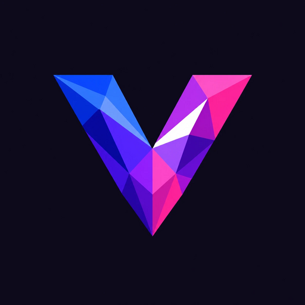
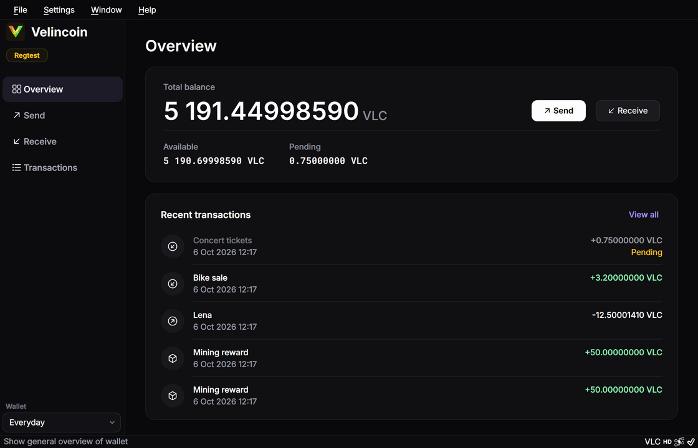

Mining
Computers race to solve a hard puzzle. The first to solve it adds the next block to the chain and receives newly created VLC.
Its own blockchain, a fixed supply and a desktop wallet. Mine your first VLC on the test network today.

Velincoin Core keeps your keys on your computer and checks every block itself. The balance you see is the one the network agreed on, not what a server tells you.

Main network or test network, shown in the sidebar, so test coins never mix with real ones.
The wallet downloads the chain and verifies it. Nobody else reports your balance.
Ask for coins with a velincoin: link or a QR code from the Receive page.
Computers race to solve a hard puzzle. The first to solve it adds the next block to the chain and receives newly created VLC.
Every wallet checks every block against the same public rules. A block that breaks one is thrown away, no matter who sent it.
Coins belong to whoever holds the key. You sign payments on your own computer, and the key never leaves it.
The limit is part of the rules every wallet enforces. Nobody can print extra coins, and nobody received coins before mining started.
Run the installer. Windows may warn you because it is not code-signed yet: choose More info, then Run anyway.
Start Velincoin Core (testnet) from the Start menu. Test coins have no value, so you can try everything.
Open Window, then Console. Get an address, then mine a block to it:
getnewaddress
generatetoaddress 1 YOUR-ADDRESS 2000000000On the test network a block takes about 15 seconds. Mined coins become spendable after 100 more blocks, so put 110 in place of the 1 to free your first 500 test VLC.
Mine together with friends on one chain. One of you shares their IP address, the others enter it in the console:
addnode "THEIR-IP:29733" "add"The installer is not code-signed yet, so Windows SmartScreen will warn you. Compare the SHA-256 checksum before you run it.
833595c1188c8bc644a186b43955bd3030a4ecd74e90bf5293940d77f6b58ce0
In PowerShell: Get-FileHash velincoin-win64-setup.exe
No. Velincoin is in testing. There is no exchange, no sale and no presale, and VLC has no market value. If someone offers to sell you VLC, it is not Velincoin.
Not publicly. Testing happens on the test network, which you open with the testnet shortcut in the Start menu. Its addresses start with tvlc1; main network addresses start with vlc1.
The installer is not signed with a paid code-signing certificate yet, so SmartScreen does not recognise it. Check the SHA-256 checksum above, then choose More info and Run anyway.
The wallet compares the newest block with the clock. Until someone mines a new block, or until you connect to someone who has newer blocks, it shows that it is behind. Connect with addnode and mine a block.
On the test network about 15 seconds per block, because mining there is 256 times easier. On the main network a block takes one processor core about 15 to 20 minutes. The console shows nothing until a block is found; if it answers [], run the command again.
Only Windows has an installer right now.